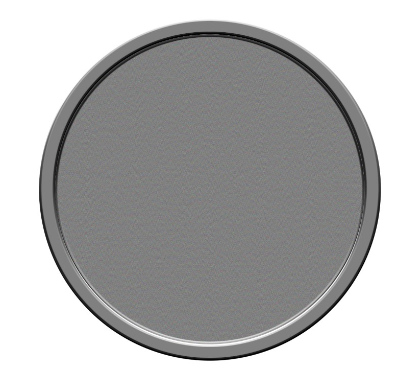
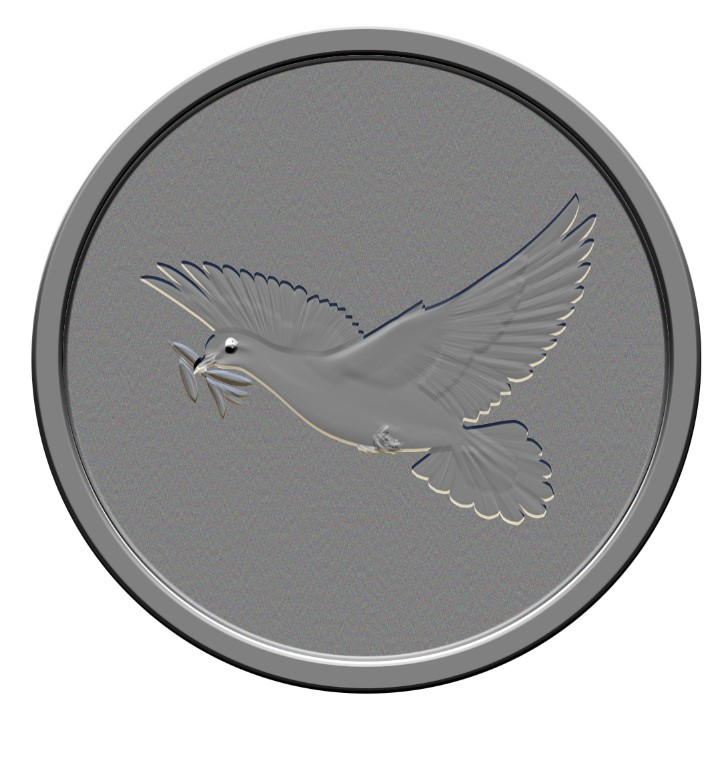
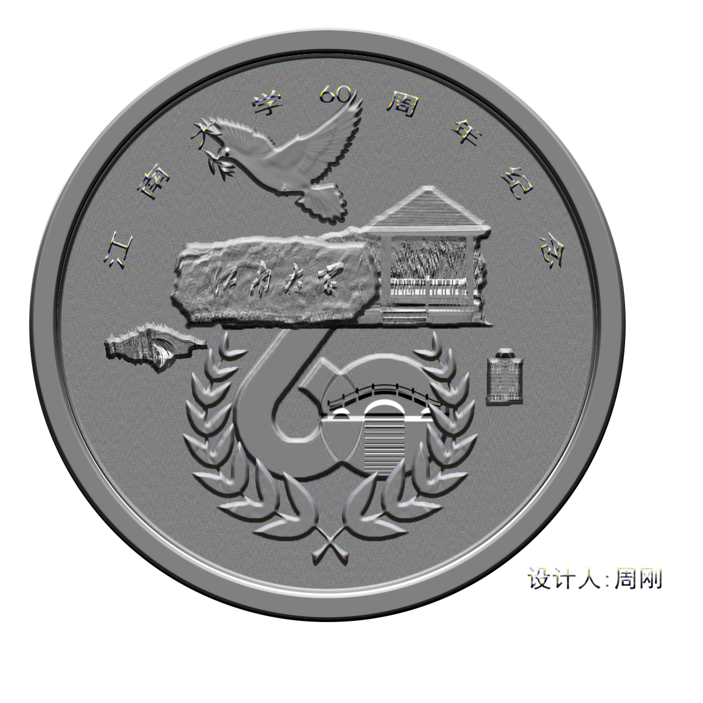
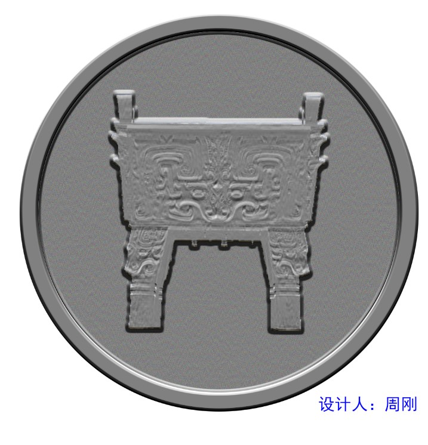
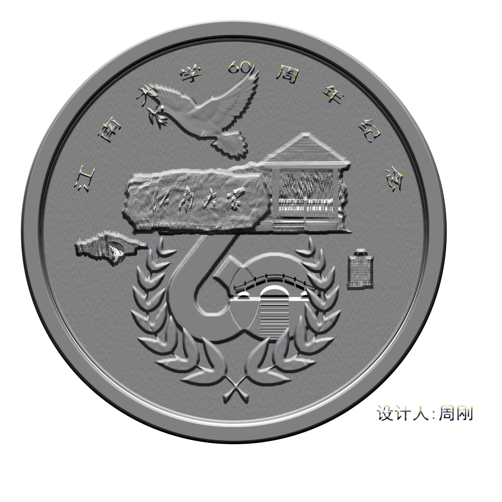
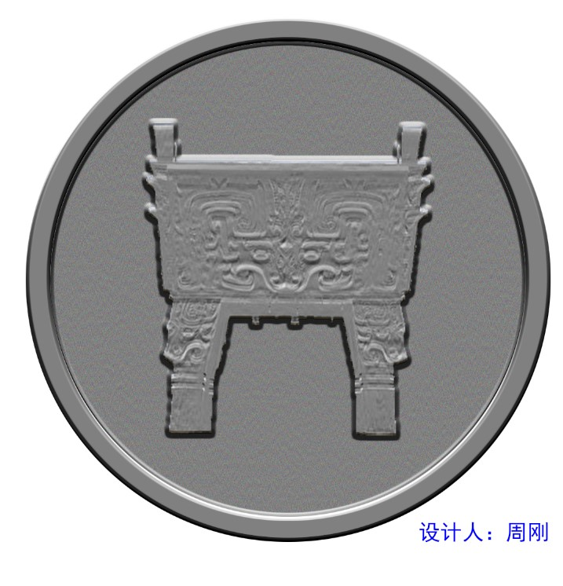

实验二：Adobe Photoshop的使用
一、实验目的：
- 学会在图像中选取区域。
- 学会图像的变换。
- 掌握蒙板、通道的功能及用法。
- 学会为图层设置效果层制作立体效果。
- 学会用滤镜制作特殊效果。
二、实验内容：
设计一枚江南大学纪念币。
三、实验环境
Adobe Photoshop
四、实验步骤（含有部分处理截图）
- 选择“开始”→“程序”→Adobe Photoshop，打开Photoshop程序界面。
- 执行“文件”→“新建”命令，建立一个新文件。新文件名为Olympic，高和宽均为10cm，分辨率为72ppi，RGB色彩模式，背景为白色。
- 执行“视图”→“显示标尺”命令，将鼠标从标尺上拖拽到图像区域，建立参考线。
- 执行“视图”→“对齐到”→“参考线”命令，从工具箱中选用圆形选区工具。
- 按Shift键在背景副本层画一个正圆选区。保持选区浮动，执行“选择”→“反选”命令，然后按Delete 键删除反选区图像，形成一个圆形图案。
- 沿圆形图案边缘制作一个环形选区。
- 执行“图层”→“图层样式”命令，应用“斜面和浮雕”命令对该层制作立体效果。

- 找到自己设计纪念币的素材，并获取对应需要的素材。
- 将所抠素材复制到圆形币的上
- 执行“滤镜”→“风格化”→“浮雕”命令，使建筑物产生浮雕效果。

- 对图层2中的五环执行“图层”→“图层样式”→“斜面和浮雕”命令,并进行后续操作
 



五、实验体会
Photoshop的有许多强大的功能，能完成许多操作